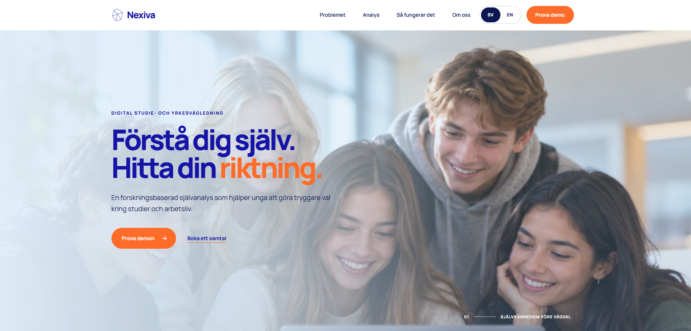
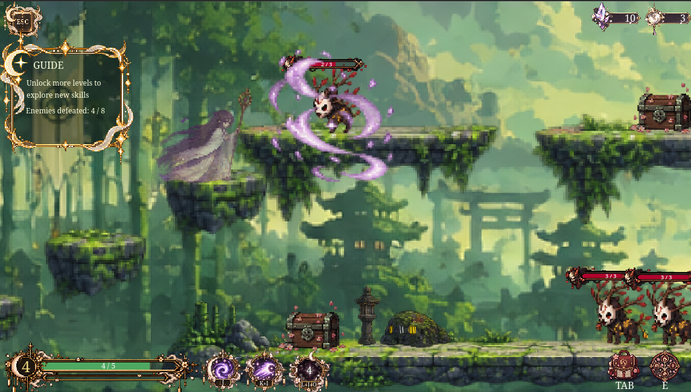

Projekt
Här är mina UX/UI och webbutvecklingsprojekt.

Duro. Tillgänglighet
Projektet fokuserade på att förbättra den övergripande tillgängligheten på hemsidan, med särskilt fokus på tydlighet, struktur och kontraster. Genom analys och användartester identifierade jag och min grupp brister i gränssnittet och tog fram lösningar i form av wireframes och prototyper i Figma.

MIND. Navigering och UI
I projektet för MIND.se fokuserade jag på att förbättra hemsidans övergripande navigering med fokus på UI för att göra det enklare för användare att hitta rätt information. Jag arbetade även med att förenkla och minimalisera interfacet för att skapa en mer tydlig och intuitiv användarupplevelse.

Portfolio. Webbutveckling
Figma prototyp och layout. HTML, CSS och JavaScript.

Nexiva. Webbdesign
Under en tvådagarshackathon arbetade jag tillsammans med tre utvecklare för att förbättra strukturen och navigeringen på en EdTech-plattform. Fokus låg på tydligare användarflöden för elever, föräldrar och skolor.

Hiruko. Speldesign
Ett solo-projekt där jag utvecklade ett 2D-spel inspirerat av japansk mytologi. Jag arbetade med koncept, visuell design, spelmekanik, banor och implementation i Godot.

Aura Beauty. Spelifiering
En spelifierad utbildningsapp för en fiktiv skönhetsbutik. Tillsammans med min grupp utforskade jag hur XP, nivåer, progression och användartester kan stödja lärande och motivation.

The Last Exhibition. ARG
Ett interaktivt digitalt mysterium där spelaren undersöker målningar, mejl och arkivdokument för att avslöja historien om en bortglömd kvinnlig konstnär. Projektet fokuserar på narrativ design, ledtrådar och användartester.